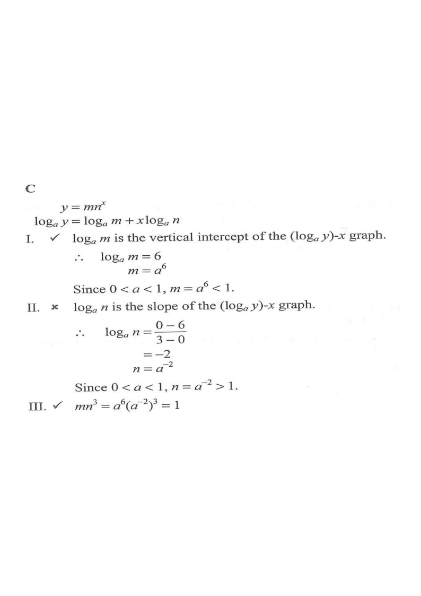

Graph of \(\log_a y\) against \(x\): a straight line with intercepts 6 and 3.
It is given that \(\log_a y\) is a linear function of \(x\), where \(0

Taking \(\log_a\) of \(y=mn^{x}\):
$$\log_a y=\log_a m + x\log_a n$$
So \(\log_a y\) is linear in \(x\), with vertical intercept \(\log_a m\) and slope \(\log_a n\).
Hint: turning a product into a sum of logs reveals the line's intercept and slope.
The line passes through \((0,6)\) and \((3,0)\), so
$$\text{slope}=\frac{0-6}{3-0}=-2 \;\Rightarrow\; \log_a n=-2$$
The slope is the change in \(\log_a y\) divided by the change in \(x\).
Vertical intercept gives \(\log_a m=6\), so \(m=a^{6}\).
Since \(0
Hint: raising a fraction between 0 and 1 to a positive power keeps it below 1.
Slope gives \(\log_a n=-2\), so \(n=a^{-2}=\dfrac{1}{a^{2}}\).
Since \(0
Hint: the reciprocal of a number in \((0,1)\) is greater than 1 — a common trap.
$$mn^{3}=a^{6}\left(a^{-2}\right)^{3}=a^{6}\cdot a^{-6}=a^{0}=1$$
\(\Rightarrow\) III is TRUE.
Hint: multiply the exponents: \((-2)\times 3=-6\), which cancels the \(+6\).
Only I and III are true \(\Rightarrow\) option C.